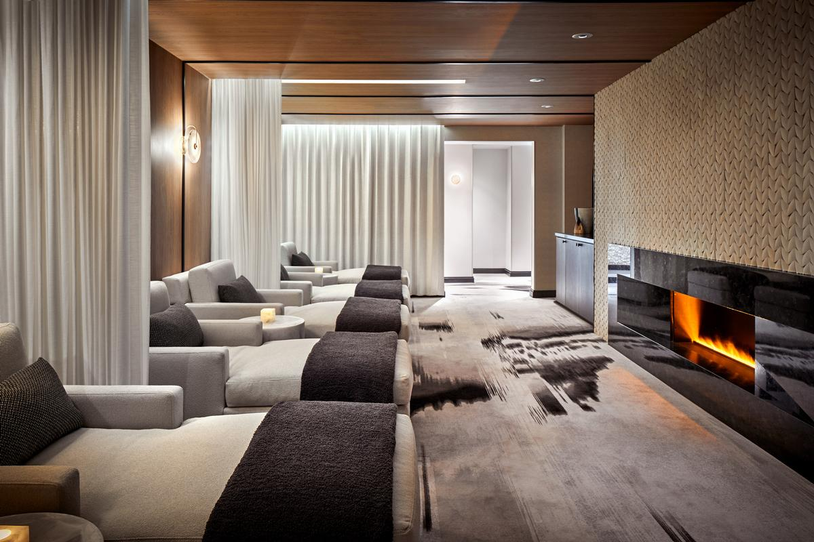
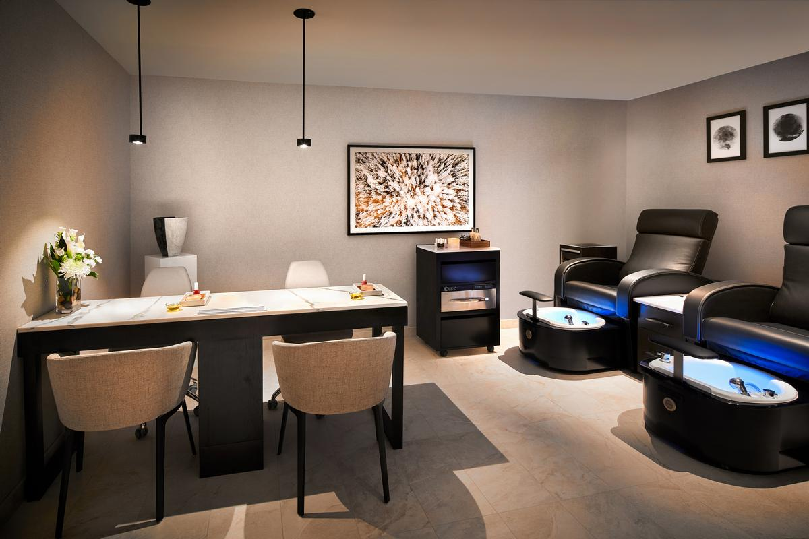
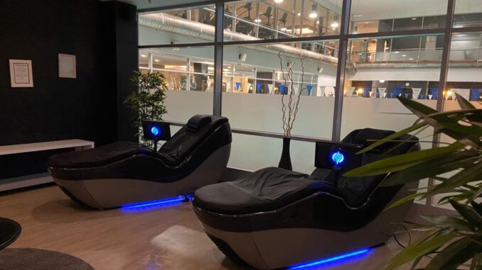

Recovery Lounge
SPA RECOVERY
Trị liệu & phục hồi
thân tâm
Sau những buổi tập nặng hoặc những ngày phải duy trì hiệu suất liên tục, cơ thể cần nhiều hơn một chiếc ghế nghỉ. Spa Recovery được xây như một lounge tái tạo năng lượng, nơi bạn làm chậm nhịp tim, thả bớt căng ở cơ thể và rời đi trong trạng thái nhẹ hơn, sạch hơn, sâu hơn.
Nơi buổi tập được khép lại đúng cách
Phục hồi không phải phần phụ, mà là phần làm cho hiệu suất trở nên bền vững
Recovery hiệu quả giúp bạn bước vào ngày kế tiếp với chất lượng cơ thể tốt hơn. Spa Recovery tại THE BIG GYM được định hướng như một trải nghiệm hậu tập tinh tế: giảm cảm giác bức nhiệt, hạ căng thần kinh, thả lỏng những vùng cơ đã làm việc nhiều và tạo một điểm dừng có chủ đích giữa nhịp sống cao áp.
Hạ nhiệt
Sau cường độ cao, cơ thể được đưa về nhịp bình tĩnh hơn thay vì rời khỏi phòng tập trong trạng thái quá tải kéo dài.
Thả căng
Không gian và nhiệt độ được dùng như công cụ giúp vùng vai, lưng, hông và hệ thần kinh bớt giữ cứng quá mức.
Tái tạo
Một session recovery tốt khiến bạn muốn quay lại tập luyện đều hơn vì cơ thể được tôn trọng đúng cách.

Trình tự recovery
Một ritual phục hồi được thiết kế để bạn chậm lại thật sự
Không cần quá nhiều bước rối rắm. Quan trọng là từng bước đều có mục đích rõ về cảm giác và trạng thái cơ thể.

01. Bước vào vùng thư giãn
Từ âm thanh, màu ánh sáng đến nhịp di chuyển, mọi thứ đều khiến cơ thể tự hiểu rằng buổi làm việc đã xong.
02. Dẫn cơ thể về nhịp ổn định
Nhiệt độ ấm, môi trường yên và khoảng nghỉ đủ dài giúp bạn không còn giữ sự gồng của cả buổi tập lẫn cả ngày làm việc.
Phù hợp nhất sau những trạng thái này
- Buổi strength nặng khiến vùng lưng, chân hoặc vai giữ căng lâu.
- Cardio kéo dài hoặc nhiều ngày làm việc liên tục khiến nhịp sống luôn ở mức kích hoạt cao.
- Giai đoạn siết cân, ngủ chưa sâu hoặc stress khiến cơ thể khó bước vào recovery tự nhiên.
- Những ngày bạn không muốn rời club quá nhanh mà muốn thật sự “hạ cánh” trước khi quay lại nhịp sống bên ngoài.

Cảm giác cao cấp nằm ở những điều rất cụ thể
Từ nhịp không gian đến cách bạn rời đi, mọi thứ đều phải dịu xuống đúng lúc
Bầu không khí yên
Recovery không thể xảy ra trong một không gian vẫn còn quá nhiều kích thích thị giác và âm thanh.
Nhiệt độ dễ chịu
Một trạng thái nhiệt phù hợp giúp cơ thể bớt giữ gồng và bắt đầu chuyển sang thư giãn sâu hơn.
Kết nối với shower
Trải nghiệm hồi phục được nối tiếp mượt sang khu tắm và thay đồ thay vì dừng lại ở nửa chừng.
Phục hồi để tiếp tục
Mục tiêu cuối cùng là giúp bạn quay lại làm việc, sinh hoạt và tập luyện tốt hơn chứ không chỉ nghỉ cho có.
“
Một club cao cấp không kết thúc ở set cuối cùng. Nó kết thúc khi thành viên rời đi trong trạng thái tốt hơn lúc bước vào.
THE BIG GYM RECOVERY STANDARD
Tái tạo có chủ đích
Để buổi tập của bạn kết thúc bằng sự thư giãn chứ không phải kiệt quệ
Nếu bạn xem recovery là một phần thật sự của chất lượng sống, Spa Recovery là không gian khiến thói quen đó trở nên đáng mong đợi.